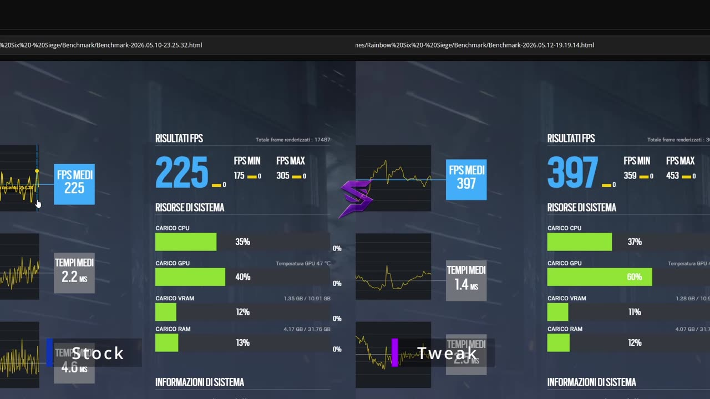

Come aumentare gli FPS su Rainbow Six Siege (PC): guida 2026

Benchmark integrato di R6 sullo stesso PC: a sinistra le impostazioni di partenza, a destra dopo l'ottimizzazione con SapoTweak.
Su Rainbow Six Siege vedere un avversario un fotogramma prima può decidere il round. Più FPS significa movimenti più fluidi, meno ritardo e meno cali durante esplosioni e breccie. In questa guida trovi tutto quello che puoi fare gratis, in ordine di importanza.
1. Come misurare gli FPS con il benchmark integrato
R6 ha un vantaggio rispetto ad altri giochi: un benchmark integrato che ripete sempre la stessa scena. È perfetto per capire se una modifica aiuta davvero.
- FPS medi: quanti fotogrammi al secondo fai in media.
- FPS minimi: gli FPS nei momenti peggiori. Sono quelli che senti come "scatto" durante le breccie.
- Tempi medi (frame time): quanti millisecondi servono per ogni fotogramma. Più bassi e regolari sono, più il gioco è fluido.
Come fare: vai nelle impostazioni grafiche e avvia il benchmark. Annota FPS medi e minimi, cambia una cosa alla volta e ripeti il test. Così sai esattamente cosa ti ha fatto guadagnare.
2. Impostazioni grafiche di R6 consigliate
Le trovi nelle impostazioni, schede Display e Grafica.
| Impostazione | Consiglio | Perché |
|---|---|---|
| Modalità schermo | Schermo intero | Meno input lag rispetto a finestra o finestra senza bordi. |
| Risoluzione | Quella nativa del monitor | Immagine nitida; lo stretched è una scelta personale, non una regola. |
| V-Sync | Disattivato | Aggiunge input lag. |
| Limite FPS | Pari agli Hz del monitor o più alto | FPS più stabili; senza limite se il PC regge bene. |
| NVIDIA Reflex | Attivo + Boost (solo NVIDIA) | Riduce l'input lag. |
| Scala di rendering | 100% (mai sotto il 90%) | Sotto quella soglia l'immagine diventa sfocata e vedi peggio dietro le feritoie. |
| Upscaling (DLSS, FSR) | Disattivato | Aggiunge sfocatura proprio dove serve vedere bene. |
| Qualità texture | In base alla memoria della scheda video | Basse con 4 GB, medie con 6-8 GB, alte oltre. |
| Ombre, riflessi, occlusione ambientale | Bassi / disattivati | Sono le voci che pesano di più durante le breccie. |
| Effetti lente, profondità di campo | Disattivati | Riempiono lo schermo di effetti e non aiutano a giocare. |
Attenzione: dopo gli aggiornamenti di stagione R6 può reimpostare alcune voci. Ricontrolla le impostazioni e rifai il benchmark a ogni nuova stagione.
3. Windows: le 6 cose da controllare
- Driver della scheda video aggiornati: scaricali dal sito NVIDIA, AMD o Intel. Spesso migliorano proprio i giochi più giocati come R6.
- Frequenza del monitor: in Impostazioni → Schermo → Schermo avanzato controlla che il monitor sia davvero a 144, 165 o 240 Hz e non a 60 Hz.
- Programmi in background: chiudi browser, launcher e overlay che non usi mentre giochi.
- Modalità gioco: in Impostazioni → Giochi → Modalità gioco, tienila attiva.
- Registrazione in background: se non la usi, disattiva le acquisizioni in background della Xbox Game Bar.
- Risparmio energia: sui portatili gioca con l'alimentatore collegato e la modalità "Prestazioni migliori".
4. Hardware: errori comuni che costano FPS
- Cavo del monitor nella scheda madre invece che nella scheda video: sui PC fissi è un errore classico.
- RAM in single channel: con due banchi negli slot giusti e il profilo XMP/EXPO attivo nel BIOS gli FPS minimi migliorano.
- Temperature alte: se CPU o GPU si scaldano troppo rallentano da sole. Pulire la polvere dalle ventole può fare la differenza.
- Gioco su disco lento: installare R6 su SSD riduce i caricamenti delle mappe.
5. Fare tutto con un clic
Seguire questa guida richiede tempo, e alcune ottimizzazioni di Windows sono difficili da fare a mano senza rischi. SapoTweak è un programma per Windows che lo fa per te:
- Profilo Rainbow Six Siege con un clic: legge le impostazioni attuali e il tuo hardware (scheda video, memoria, monitor) e ti mostra cosa cambierà prima di applicarlo.
- Oltre 150 ottimizzazioni di Windows pensate per il gaming, con backup automatico e ripristino in qualsiasi momento.
- Sicuro: non tocca BattlEye né i file del gioco, e modifica le impostazioni solo a gioco chiuso.
- Supporto su Discord per qualsiasi dubbio.
Nel benchmark qui sopra, sullo stesso PC, gli FPS medi passano da 225 a 397 e i minimi da 175 a 359. Sulla home trovi il confronto video completo. I risultati dipendono dal tuo PC.
Vuoi più FPS senza perdere tempo?
Prova SapoTweak: 9,99 € al mese, disdici quando vuoi.
6. Domande frequenti
Come misuro gli FPS su Rainbow Six Siege?
Il gioco ha un benchmark integrato nelle impostazioni grafiche: avvialo prima e dopo ogni modifica e confronta FPS medi e FPS minimi. È il modo più affidabile perché la scena è sempre la stessa.
Conviene abbassare la scala di rendering su R6?
Abbassarla dà FPS ma rende l'immagine sfocata e gli avversari più difficili da vedere, soprattutto dietro le feritoie. Meglio tenerla al 100% e, solo se serve, non scendere sotto il 90%.
Ottimizzare il PC può dare problemi con BattlEye?
Cambiare le impostazioni di Windows o il file delle impostazioni del gioco non è un cheat. SapoTweak non tocca BattlEye, i file del gioco o le mod: modifica le impostazioni solo a gioco chiuso e salva sempre un backup.
Perché gli FPS calano durante le esplosioni e le breccie?
Esplosioni, fumo e distruzione pesano sia sul processore sia sulla scheda video. Effetti lente, riflessi e ombre alte peggiorano i cali: abbassarli è il modo più rapido per alzare gli FPS minimi.